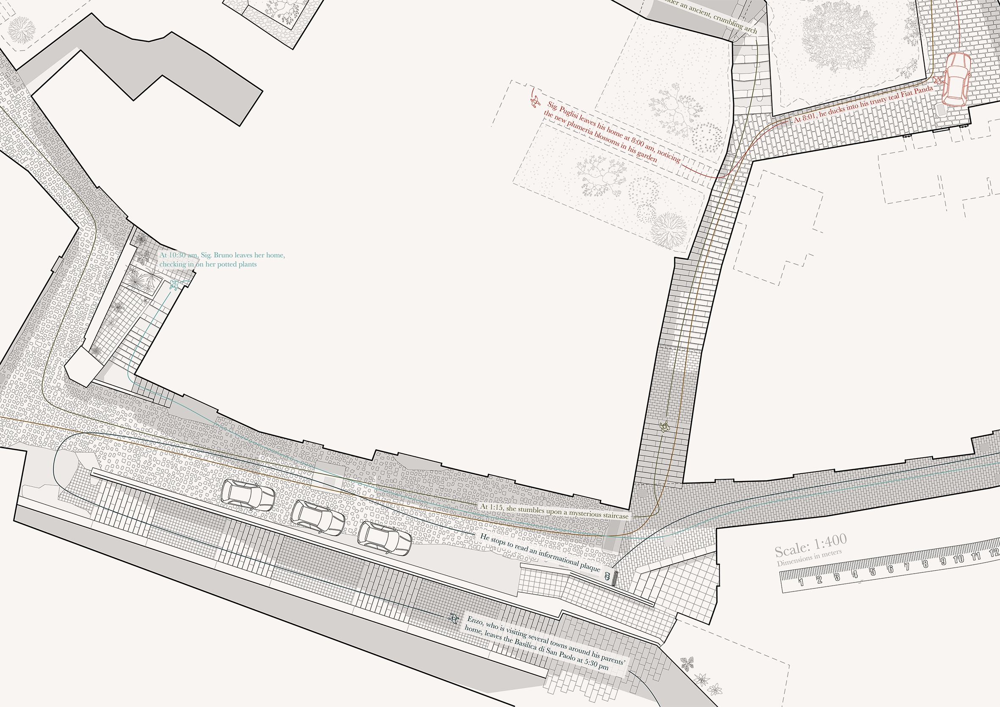
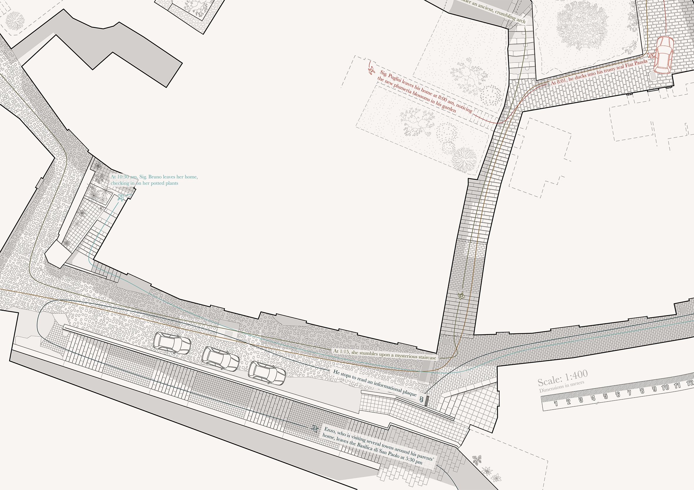

Streetscape Topography
The documentation of San Paolo Quarter.
In this site plan, reconstructed remotely through drone photos, Google Maps, and video, various textures allow a detailed image of the streetscape to emerge; one that bears the marks of abandonment, expansion, and modification over a long history. Overlaid over the streetscape are trails of various characters, imagining how they might inhabit the space.


 
